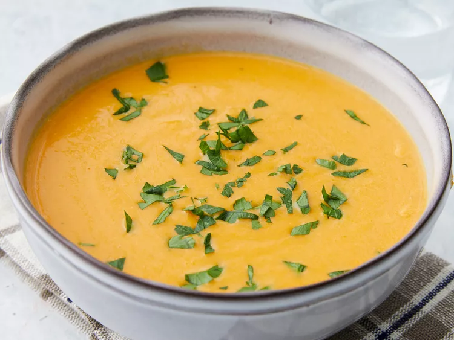

Pumpkin Soup

Description
Welcome fall with this smooth, creamy, and delicious pumpkin soup recipe.
Ingredients
- Stock
- Pumpkin Puree
- Onion
- Garlic
- Seasonings
- Whipping Cream
Steps
- Heat olive oil in a large pot over medium-high. Add onion and cook, stirring occasionally, until onion is browned and softened, about 10 minutes. Add peppercorns, garlic, and thyme, and cook, stirring often, until fragrant and slightly browned, about 2 minutes.
- Stir in pumpkin puree; cook, stirring occasionally, until puree turns a few shades darker, about 5 minutes. Stir in chicken stock, maple syrup, salt, nutmeg, and cinnamon. Bring to a simmer over medium-low. Simmer, uncovered, and stirring occasionally, until slightly reduced and flavors meld, about 30 minutes.
- Transfer soup to a blender in batches; secure lid on blender and remove center piece to allow steam to escape. Place a clean towel over opening; blend until smooth, about 30 seconds per batch. Return soup to the pot and stir in heavy cream. Cook over medium until heated through, about 4 minutes.
- Return soup to the pot and stir in heavy cream. Cook over medium until heated through, about 4 minutes.
- Ladle soup into bowls and garnish with fresh parsley.Ladle soup into bowls and garnish with fresh parsley.